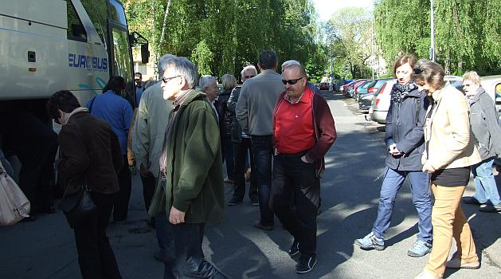

A tymczasem w Cameracie...
.
2014-05-04
Pakujemy się do autokaru i wyjeżdżamy z Pragi. Jedziemy do Kutna Hora.
Pogoda piękna, „prezeska” uśmiechnięta, życie jest piękne :)
Jesteśmy na miejscu. Idziemy zwiedzać Kaplicę Czaszek???
Idziemy dalej. Czaszki już mamy za sobą. Teraz coś pięknego, czyli kościół świętej Barbary (często nazywany też katedrą). Gotycka świątynia w 1995 wraz z innymi zabytkami miasta została wpisana na listę dziedzictwa kulturowego UNESCO.

© Stowarzyszenie Muzyczne Chór Camerata Wieliczka
Projekt i wykonanie:  Prowadzenie strony: Małgorzata Wysocka-Cebula
Prowadzenie strony: Małgorzata Wysocka-Cebula